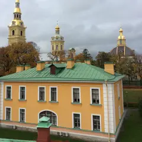

Паб · Петроградская сторона
Manneken Pis на Каменноостровском
Бельгийская пивная у «Горьковской»: траппистские сорта, мидии и картофель фри; в пятницу и субботу до трёх ночи.
- ₽ · до 1 500 ₽ на человека
- Новое в каталоге
- в 2 планах
Позвать сюда: Manneken Pis на КаменноостровскомОткрыть в каталоге: Manneken Pis на КаменноостровскомМаршрут до места: Manneken Pis на Каменноостровском
Адрес и детали
- Адрес
- Каменноостровский пр., 12
Открыть на Яндекс Картах (в новой вкладке) - Метро
- м. Горьковская
- Цена
- до 1 500 ₽ на человека
- Часы работы
- пн–чт 12:00–01:00; пт, сб 12:00–02:00; вс 12:00–01:00 · проверили в октябре 2026
- Телефон
- +7 (921) 903-84-54
- Проверено
- работает — проверили в октябре 2026
Планы с этим местом 2

- Петропавловская крепость · Крепость · м. Горьковская
- 18 минут пешкомManneken Pis на Каменноостровском · Паб
Петропавловка к полудню — пушка бьёт с бастиона, вокруг вид на Дворцовую, — а потом прогулка к Горьковской, 18 минут пешком, в бельгийскую пивную.
Открыть план: Полуденный выстрел и бельгийское пивоПозвать сюда: Полуденный выстрел и бельгийское пиво
Фото: Vadim Fedin, CC BY 3.0 · Wikimedia Commons
- Kiks на Петроградке · Бильярдная · м. Петроградская
- 7 минут пешкомManneken Pis на Каменноостровском · Паб
Столы для пула и крафт на Каменноостровском, а потом 7 минут пешком — бельгийская пивная с траппистами и мидиями.
Открыть план: Пул на Петроградке и бельгийское пивоПозвать сюда: Пул на Петроградке и бельгийское пиво
Входит в подборки
Похожие рядом
Что ещё рядом
Как позвать
- Выбери план, место или событие — в карточке адрес, цены и маршрут в Яндекс Картах.
- Нажми «Позвать сюда» — соберётся приглашение-игра для свидания или голосование для компании.
- Отправь ссылку в любой мессенджер: тебе ответят, а компания отметит, куда и когда может. Бесплатно и без регистрации.